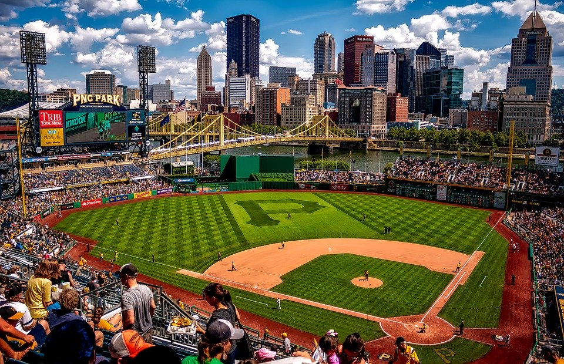
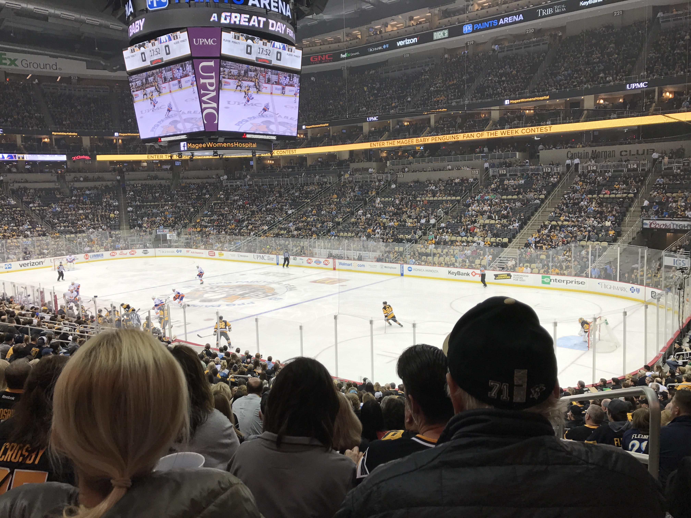

Heinz field is home to both the Pittsburgh Steelers and the Pitt Panthers football teams.
It's 68,400 bright gold seats remind opponents and visitors that they are in black and gold territory. And if that doesn't do it, the Terrible Towels swinging in the air ensure that you are in Steeler Nation.
Inside the stadium, you will find several concession stands and the FedEx Great Hall, which filled with Steelers and Panthers memorabilia.
One of the most notable features at Heinz Field are the two 35-foot tall replica ketchup bottles that border the scoreboard. Each bottle could hold 1,664,000 fluid ounces of ketchup or 4,500 footballs!
Pittsburgh's newest sports venue, Highmark Stadium, is located in Station Square, an area on the south shore along the Monongahela River. This 5,000 seat stadium is home to the Pittsburgh Riverhouds Soccer Club, a team in the United Soccer League.
Be sure to look for the Steel Army, a Riverhouds' fanatic group found behind the east end goal that livens up the game with their chants, signs, and drums!
PNC Park

Deemed "The Best Ballpark in America" due to its spectaculr view of the city skyline, the Pittsburgh Pirates are proud to call PNC Park their home. This 38,496 seat ballpark sits right along the Allegheny River. In PNC Park's 19 seasons, only five homerun balls have landed directly in the river, and two of them belong to current Pirate slugger Josh Bell.
You may want to skip the foot long dogs and fries in this foodie city and instead have a pulled pork sandwich at Manny's BBQ, named after Pirate great Manny Sanguillen, or a Pittsburgh classic Primanti Sandwich, topped with fries, of course.
But make sure to be back in your seats by the end of the 5th inning for the Pittsburgh Pierogi race, sure to be a family favorite!
PPG Paints Arena

PPG Paints Arena is most notably the home stadium of the Pittsburgh Penguins, but it also holds hundreds of concerts and other events throughout the year. For a hockey game, the seating capacity is 18,387 people.
In recent years, the Penguins have been Pittsburgh's most successful sports team, winning the Stanley Cup back to back years in 2016 and 2017. Between periods, break out the dance moves and pay attention to the scoreboard as fans compete in the "Dance for a Dilly Bar Contest." The winner receives a free Dairy Queen Dilly Bar!